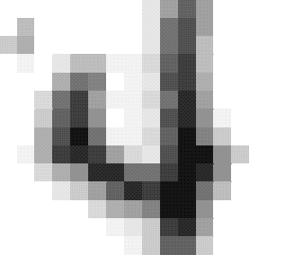

Kernel Methods
Bernhard Sch¨
olkopf
Max-Planck-Institut f¨
ur biologische Kybernetik
B. Sch¨olkopf, Cambridge, 2009


Roadmap
• Similarity, kernels, feature spaces
• Positive definite kernels and their RKHS
• Kernel means, representer theorem
• Support Vector Machines
B. Sch¨olkopf, Cambridge, 2009


Learning and Similarity: some Informal Thoughts
• input/output sets X, Y
• training set (x1, y1), . . . , (xm, ym) ∈ X × Y
• “generalization”: given a previously unseen x ∈ X, find a suit-
able y ∈ Y
• (x, y) should be “similar” to (x1, y1), . . . , (xm, ym)
• how to measure similarity?
– for outputs: loss function (e.g., for Y = {±1}, zero-one loss)
– for inputs: kernel
B. Sch¨olkopf, Cambridge, 2009


Similarity of Inputs
• symmetric function
k : X × X → R
(x, x$) %→ k(x, x$)
• for example, if X = RN: canonical dot product
!N
k(x, x$) =
[x]
i=1
i[x$]i
• if X is not a dot product space: assume that k has a represen-
tation as a dot product in a linear space H, i.e., there exists a
map Φ : X → H such that "
#
k(x, x$) = Φ(x), Φ(x$) .
• in that case, we can think of the patterns as Φ(x), Φ(x$), and
carry out geometric algorithms in the dot product space (“fea-
ture space”) H.


An Example of a Kernel Algorithm
Idea: classify points x := Φ(x) in feature space according to which
of the two class means is closer.
1 !
1
!
c+ :=
Φ(x
Φ(x
m
i), c− :=
i)
+
m
y
−
i=1
yi=−1
+
o
o
.
+
w
c
+
2
c
o
c1
x-c
o
x
Compute the sign of the dot product between w := c+ − c− and
x − c.
B. Sch¨olkopf, Cambridge, 2009


An Example of a Kernel Algorithm, ctd. [32]
!
1
!
f (x) = sgn 1
'Φ(x), Φ(x
'Φ(x), Φ(x
m
i)(−
i)(+b
+
m−
{i:yi=+1}
{i:yi=−1}
!
1
!
= sgn 1
k(x, x
k(x, x
m
i) −
i) + b
+
m−
{i:yi=+1}
{i:yi=−1}
where
1
!
1
!
b =
1
k(x
k(x
.
2
m2
i, xj) −
i, xj)
−
m2
{(i,j):y
+
i=yj=−1}
{(i,j):yi=yj=+1}
• provides a geometric interpretation of Parzen windows
B. Sch¨olkopf, Cambridge, 2009


An Example of a Kernel Algorithm, ctd.
• Demo
• Exercise: derive the Parzen windows classifier by computing the
distance criterion directly
B. Sch¨olkopf, Cambridge, 2009


Statistical Learning Theory
1. started by Vapnik and Chervonenkis in the Sixties
2. model: we observe data generated by an unknown stochastic
regularity
3. learning = extraction of the regularity from the data
4. the analysis of the learning problem leads to notions of capacity
of the function classes that a learning machine can implement.
5. support vector machines use a particular type of function class:
classifiers with large “margins” in a feature space induced by a
kernel.
[39, 40]
B. Sch¨olkopf, Cambridge, 2009


Kernels and Feature Spaces
Preprocess the data with
Φ : X → H
x %→ Φ(x),
where H is a dot product space, and learn the mapping from Φ(x)
to y [6].
• usually, dim(X) ) dim(H)
• “Curse of Dimensionality”?
• crucial issue: capacity, not dimensionality
B. Sch¨olkopf, Cambridge, 2009


Example: All Degree 2 Monomials
Φ : R2 → R3
√
(x1, x2) %→ (z1, z2, z3) := (x21, 2 x1x2, x22)
z
x
3
"
2
"
"
"
"
"
"
"
"
"
"
"
"
"
!
"
"
"
"
!
x
!
"
!
!
1
!
!
"
!
"
!
!
z
"
!
!
"
1
!
!
!
"
"
"
!
"
"
"
"
"
"
"
"
z2
B. Sch¨olkopf, Cambridge, 2009



General Product Feature Space
How about patterns x ∈ RN and product features of order d?
Here, dim(H) grows like N d.
E.g. N = 16 × 16, and d = 5 −→ dimension 1010
B. Sch¨olkopf, Cambridge, 2009


The Kernel Trick, N = d = 2
"
#
√
√
Φ(x), Φ(x$) = (x21, 2 x1x2, x22)(x$21, 2 x$1x$2, x$22)+
"
= x, x$#2
= : k(x, x$)
−→ the dot product in H can be computed in R2
B. Sch¨olkopf, Cambridge, 2009


The Kernel Trick, II
More generally: x, x$ ∈ RN, d ∈ N:
d
"
N
!
x, x$#d =
xj · x$
j
j=1
N
!
"
#
=
xj · · · · · x · x$ · · · · · x$ = Φ(x), Φ(x$) ,
1
jd
j1
jd
j1,...,jd=1
where Φ maps into the space spanned by all ordered products of
d input directions
B. Sch¨olkopf, Cambridge, 2009


Mercer’s Theorem
If k is a continuous kernel of a positive definite integral oper-
ator on L2(X) (where X is some compact space),
(
k(x, x$)f (x)f (x$) dx dx$ ≥ 0,
X
it can be expanded as
∞
!
k(x, x$) =
λiψi(x)ψi(x$)
i=1
using eigenfunctions ψi and eigenvalues λi ≥ 0 [26].
B. Sch¨olkopf, Cambridge, 2009


The Mercer Feature Map
In that case
√
λ1ψ1(x)
√
Φ(x) :=
λ2ψ2(x)
..
"
#
satisfies Φ(x), Φ(x$) = k(x, x$).
Proof:
) √
√
*
"
#
λ1ψ1(x)
√
λ1ψ1(x$)
√
Φ(x), Φ(x$) =
λ2ψ2(x) , λ2ψ2(x$)
..
..
∞
!
=
λiψi(x)ψi(x$) = k(x, x$)
i=1
B. Sch¨olkopf, Cambridge, 2009


The Kernel Trick — Summary
• any algorithm that only depends on dot products can benefit
from the kernel trick
• this way, we can apply linear methods to vectorial as well as
non-vectorial data
• think of the kernel as a nonlinear similarity measure
• examples of common kernels:
"
Polynomial k(x, x$) = ( x, x$# + c)d
"
Sigmoid k(x, x$) = tanh(κ x, x$# + Θ)
Gaussian k(x, x$) = exp(−.x − x$.2/(2 σ2))
• Kernels are also known as covariance functions [44, 41, 45, 25]
B. Sch¨olkopf, Cambridge, 2009


Positive Definite Kernels
It can be shown that the admissible class of kernels coincides with
the one of positive definite (pd) kernels: kernels which are sym-
metric (i.e., k(x, x$) = k(x$, x)), and for
• any set of training points x1, . . . , xm ∈ X and
• any a1, . . . , am ∈ R
satisfy
! aiajKij ≥ 0, where Kij := k(xi,xj).
i,j
K is called the Gram matrix or kernel matrix.
+
If for pairwise distinct points,
i,j aiajKij = 0 =⇒ a = 0, call
it strictly positive definite.
B. Sch¨olkopf, Cambridge, 2009


Elementary Properties of PD Kernels
Kernels from Feature Maps.
"
#
If Φ maps X into a dot product space H, then Φ(x), Φ(x$) is a
pd kernel on X × X.
Positivity on the Diagonal.
k(x, x) ≥ 0 for all x ∈ X
Cauchy-Schwarz Inequality.
k(x, x$)2 ≤ k(x, x)k(x$, x$) (Hint: compute the determinant of
the Gram matrix)
Vanishing Diagonals.
k(x, x) = 0 for all x ∈ X =⇒ k(x, x$) = 0 for all x, x$ ∈ X
B. Sch¨olkopf, Cambridge, 2009


The Feature Space for PD Kernels
[5, 2, 29]
• define a feature map
Φ : X → RX
x %→ k(., x).
E.g., for the Gaussian kernel:
!
.
.
x
x'
!(x)
!(x')
Next steps:
• turn Φ(X) into a linear space
• endow it with a dot product satisfying
"
#
"
#
Φ(x), Φ(x$) = k(x, x$), i.e., k(., x), k(., x$) = k(x, x$)
• complete the space to get a reproducing kernel Hilbert space
B. Sch¨olkopf, Cambridge, 2009


Turn it Into a Linear Space
Form linear combinations
m
!
f (.) =
αik(., xi),
i=1
m$
!
g(.) =
βjk(., x$j)
j=1
(m, m$ ∈ N, αi, βj ∈ R, xi, x$j ∈ X).
B. Sch¨olkopf, Cambridge, 2009


Endow it With a Dot Product
m
! m$
!
'f, g( :=
αiβjk(xi, x$j)
i=1 j=1
m
!
m$
!
=
αig(xi) =
βjf(x$j)
i=1
j=1
• This is well-defined, symmetric, and bilinear (more later).
• So far, it also works for non-pd kernels
B. Sch¨olkopf, Cambridge, 2009


The Reproducing Kernel Property
Two special cases:
• Assume
f (.) = k(., x).
In this case, we have
'k(., x), g( = g(x).
• If moreover
g(.) = k(., x$),
we have
'k(., x), k(., x$)( = k(x, x$).
k is called a reproducing kernel
(up to here, have not used positive definiteness)
B. Sch¨olkopf, Cambridge, 2009


Endow it With a Dot Product, II
• It can be shown that '., .( is a p.d. kernel on the set of functions
+
{f(.) =
m
i=1 αik(., xi)|αi ∈ R, xi ∈ X} :
)
*
!
"
#
!
!
γiγj fi, fj =
γifi,
γjfj =: 'f, f(
ij
i
j
)
*
!
!
!
=
αik(., xi),
αik(., xi) =
αiαjk(xi, xj) ≥ 0
i
i
ij
• furthermore, it is strictly positive definite:
f (x)2 = 'f, k(., x)(2 ≤ 'f, f( 'k(., x), k(., x)( = 'f, f( k(x, x)
hence 'f, f( = 0 implies f = 0.
• Complete the space in the corresponding norm to get a Hilbert
space Hk.
B Sch¨olkopf Cambridge 2009


Explicit Construction of the RKHS Map for Mercer
Kernels
Recall that the dot product has to satisfy
'k(x, .), k(x$, .)( = k(x, x$).
For a Mercer kernel
NF
!
k(x, x$) =
λjψj(x)ψj(x$)
j=1
"
#
(with λi > 0 for all i, NF ∈ N ∪ {∞}, and ψi, ψj
= δ
L
ij),
2(X)
this can be achieved by choosing '., .( such that
'ψi, ψj( = δij/λi.
B. Sch¨olkopf, Cambridge, 2009


ctd.
To see this, compute
)
*
!
!
'k(x, .), k(x$, .)( =
λiψi(x)ψi,
λjψj(x$)ψj
i
j
!
=
λiλjψi(x)ψj(x$)'ψi, ψj(
i,j
!
=
λiλjψi(x)ψj(x$)δij/λi
i,j
!
=
λiψi(x)ψi(x$)
i
= k(x, x$).
B. Sch¨olkopf, Cambridge, 2009


Deriving the Kernel from the RKHS
An RKHS is a Hilbert space H of functions f where all point
evaluation functionals
px : H → R
f %→ px(f) = f(x)
exist and are continuous.
Continuity means that whenever f and f $ are close in H, then
f (x) and f $(x) are close in R. This can be thought of as a topo-
logical prerequisite for generalization ability.
By Riesz’ representation theorem, there exists an element of H,
call it rx, such that
'rx, f( = f(x),
in particular,
'rx, rx$( = rx$(x).
Define k(x, x$) := rx(x$) = rx$(x).
(cf. Canu & Mary, 2002)


The Empirical Kernel Map
Recall the feature map
Φ : X → RX
x %→ k(., x).
• each point is represented by its similarity to all other points
• how about representing it by its similarity to a sample of points?
Consider
Φm : X → Rm
x %→ k(., x)|(x1,...,xm) = (k(x1, x), . . . , k(xm, x))+
B. Sch¨olkopf, Cambridge, 2009


ctd.
• Φm(x1), . . . , Φm(xm) contain all necessary information about
Φ(x1), . . . , Φ(xm)
"
#
• the Gram matrix Gij := Φm(xi), Φm(xj) satisfies G = K2
where Kij = k(xi, xj)
• modify Φm to
Φw
m : X → Rm
x %→ K−12(k(x1, x), . . . , k(xm, x))+
• this “whitened” map (“kernel PCA map”) satifies
"
#
Φw
m(xi), Φw
m(xj) = k(xi, xj)
for all i, j = 1, . . . , m.
B. Sch¨olkopf, Cambridge, 2009


Some Properties of Kernels [32, 34]
If k1, k2, . . . are pd kernels, then so are
• αk1, provided α ≥ 0
• k1 + k2
• k1 · k2
• k(x, x$) := limn→∞ kn(x, x$), provided it exists
+
• k(A, B) :=
x∈A,x$∈B k1(x, x$), where A, B are finite subsets
of X
+
(using the feature map ˜
Φ(A) :=
x∈A Φ(x))
Further operations to construct kernels from kernels: tensor prod-
ucts, direct sums, convolutions [19].
B. Sch¨olkopf, Cambridge, 2009


Properties of Kernel Matrices, I [30]
Suppose we are given distinct training patterns x1, . . . , xm, and a
positive definite m × m matrix K.
K can be diagonalized as K = SDS+, with an orthogonal matrix
S and a diagonal matrix D with nonnegative entries. Then
"
#
,√
√
-
Kij = (SDS+)ij = Si, DSj =
DSi, DSj ,
where the Si are the rows of S.
We have thus constructed a map Φ into an m-dimensional feature
space H such that
"
#
Kij = Φ(xi), Φ(xj) .
B. Sch¨olkopf, Cambridge, 2009


Properties, II: Functional Calculus [33]
• K symmetric m × m matrix with spectrum σ(K)
• f a continuous function on σ(K)
• Then there is a symmetric matrix f(K) with eigenvalues in
f (σ(K)).
• compute f(K) via Taylor series, or eigenvalue decomposition of
K: If K = S+DS (D diagonal and S unitary), then f (K) =
S+f (D)S, where f (D) is defined elementwise on the diagonal
• can treat functions of symmetric matrices like functions on R
(αf + g)(K) = αf (K) + g(K)
(f g)(K) = f (K)g(K) = g(K)f (K)
.f.∞,σ(K) = .f(K).
σ(f (K)) = f (σ(K))
(the C∗-algebra generated by K is isomorphic to the set of
continuous functions on σ(K))


An example of a kernel algorithm, revisited
o
+
µ(Y )
+
w
.
o
µ(X
o
)
+
+
X compact subset of a separable metric space, m, n ∈ N.
Positive class X := {x1, . . . , xm} ⊂ X
Negative class Y := {y1, . . . , yn} ⊂ X
+
+
RKHS means µ(X) = 1
m
n
m
i=1 k(xi, ·), µ(Y ) = 1
n
i=1 k(yi, ·).
Get a problem if µ(X) = µ(Y )!
B. Sch¨olkopf, Cambridge, 2009


When do the means coincide?
"
k(x, x$) = x, x$#:
the means coincide
"
k(x, x$) = ( x, x$# + 1)d: all empirical moments up to order d coincide
k strictly pd:
X = Y .
The mean “remembers” each point that contributed to it.
B. Sch¨olkopf, Cambridge, 2009


Proposition 1 Assume X, Y are defined as above, k is
strictly pd, and for all i, j, xi 4= xj, and yi 4= yj.
If for some αi, βj ∈ R − {0}, we have
m
!
n
!
αik(xi, .) =
βjk(yj, .),
(1)
i=1
j=1
then X = Y .
B. Sch¨olkopf, Cambridge, 2009


Proof (by contradiction)
+
W.l.o.g., assume that x
n
1 4∈ Y . Subtract
j=1 βjk(yj, .) from (1),
and make it a sum over pairwise distinct points, to get
!
0 =
γik(zi, .),
i
where z1 = x1, γ1 = α1 4= 0, and
z2, · · · ∈ X ∪ Y − {x1}, γ2, · · · ∈ R.
+
Take the RKHS dot product with
j γjk(zj, .) to get
!
0 =
γiγjk(zi, zj),
ij
with γ 4= 0, hence k cannot be strictly pd.
Exercise: generalize to the case of nonsingular kernel (i.e., leading
to nonsingular Gram matrices for pairwise distinct points).


Generalization
We will prove a more general statement, without assuming positive definiteness.
Definition 2 We call a kernel k : X2 → R nonsingular if for any n ∈ N and pairwise distinct x1, . . . , xn ∈ X, the Gram matrix
(k(xi, xj))ij is nonsingular.
Note that strictly positive definite kernels are nonsingular: if the matrix K is singular, then there exists a β 4= 0 such that
Kβ = 0, hence β!Kβ = 0, hence k is not strictly positive definite.
Proposition 3 Assume X, Y are defined as above, k is nonsingular, and for all i, j, xi 4= xj, and yi 4= yj.
If for some αi, βj ∈ R − {0}, we have
m
!
n
!
αik(xi, .) =
βjk(yj, .),
(2)
i=1
j=1
then X = Y .
+
Proof (by contradiction) W.l.o.g., assume that x
n
1 4∈ Y . Subtract
β
j=1
j k(yj , .) from (2), and make it a sum over pairwise
distinct points, to get
!
0 =
γik(zi, .),
i
where z1 = x1, γ1 = α1 4= 0, and z2, · · · ∈ X ∪ Y − {x1}, γ2, · · · ∈ R.
Similar to the pd case, k induces a linear space with a bilinear form satisfying the reproducing kernel property.
+
Take the bilinear form between
λ
j
j k(zj , .) and the above, to get
!
0 =
λjγik(zj, zi) = λ!Kγ,
ij
where λ ∈ R is arbitrary. Hence Kγ = 0. However, γ 4= 0, hence K is singular.
Since the zi are pairwise distinct, k cannot be nonsingular.
B. Sch¨olkopf, Cambridge, 2009


The mean map
m
1 !
µ : X = (x1, . . . , xm) %→
k(x
m
i, ·)
i=1
satisfies
)
*
m
m
1 !
1 !
'µ(X), f( =
k(x
=
f (x
m
i, ·), f
m
i)
i=1
i=1
and
.
.
. 1 m
!
1 n
!
.
.µ(X)−µ(Y ). = sup |'µ(X) − µ(Y ), f(| = sup .
.
.
f (xi) −
f (yi). .
.f.≤1
.f.≤1 .m
n
.
i=1
i=1
Note: distance in the RKHS = solution of a high-dimensional
optimization problem.
B. Sch¨olkopf, Cambridge, 2009


Witness function
f = µ(X)−µ(Y ) , thus f (x)
.µ(X)−µ(Y ).
∝ 'µ(X) − µ(Y ), k(x, .)():
Witness f for Gauss and Laplace data
1
f
0.8
Gauss
Laplace
0.6
0.4
0.2
0
Prob. density and f −0.2
−0.4
−6
−4
−2
0
2
4
6
X
This function is in the RKHS of a Gaussian kernel, but not in the
RKHS of the linear kernel.
B. Sch¨olkopf, Cambridge, 2009


The mean map for measures
p, q Borel probability measures,
Ex,x$∼p[k(x, x$)], Ex,x$∼q[k(x, x$)] < ∞ (.k(x, .). ≤ M < ∞ is sufficient)
Define
µ : p %→ Ex∼p[k(x, ·)].
Note
'µ(p), f( = Ex∼p[f(x)]
and
.
.
.µ(p) − µ(q). = sup .Ex∼p[f(x)] − Ex∼q[f(x)]. .
.f.≤1
Recall that in the finite sample case, for strictly p.d. kernels, µ
was injective — how about now?
B. Sch¨olkopf, Cambridge, 2009


Theorem 4 [13, 10]
.
.
p = q ⇐⇒ sup .Ex∼p(f(x)) − Ex∼q(f(x)). = 0,
f ∈C(X)
where C(X) is the space of continuous bounded functions on
X.
Replace C(X) by the unit ball in an RKHS that is dense in C(X)
— universal kernel [38], e.g., Gaussian.
Theorem 5 [16] If k is universal, then
p = q ⇐⇒ .µ(p) − µ(q). = 0.
B. Sch¨olkopf, Cambridge, 2009


• µ is invertible on its image
M = {µ(p) | p is a probability distribution}
(the “marginal polytope”, [42])
• generalization of the moment generating function of a RV x
with distribution p:
/
0
Mp(.) = Ex∼p e'x, · ( .
B. Sch¨olkopf, Cambridge, 2009


Uniform convergence bounds
Let X be an i.i.d. m-sample from p. The discrepancy
.
.
.
.
.
m
1 !
.
.µ(p) − µ(X). = sup .
.
.Ex∼p[f(x)] −
f (xi).
.f.≤1 .
m i=1
.
can be bounded using uniform convergence methods [37].
B. Sch¨olkopf, Cambridge, 2009


Application 1: Two-sample problem [16]
X, Y i.i.d. m-samples from p, q, respectively.
.µ(p) − µ(q).2 =Ex,x$∼p [k(x, x$)] − 2Ex∼p,y∼q [k(x, y)] + Ey,y$∼q [k(y, y$)]
=Ex,x$∼p,y,y$∼q [h((x, y), (x$, y$))]
with
h((x, y), (x$, y$)) := k(x, x$) − k(x, y$) − k(y, x$) + k(y, y$).
Define
D(p, q)2 := Ex,x$∼p,y,y$∼qh((x, y), (x$, y$))
!
ˆ
D(X, Y )2 :=
1
h((x
m(m−1)
i, yi), (xj, yj)).
i4=j
ˆ
D(X, Y )2 is an unbiased estimator of D(p, q)2.
It’s easy to compute, and works on structured data.
B. Sch¨olkopf, Cambridge, 2009


Theorem 6 Assume k is bounded.
ˆ
D(X, Y )2 converges to D(p, q)2 in probability with rate O(m−12).
This could be used as a basis for a test, but uniform convergence bounds are often loose..
1 2
√
Theorem 7 We assume E h2 < ∞. When p 4= q, then
m( ˆ
D(X, Y )2 − D(p, q)2)
converges in distribution to a zero mean Gaussian with variance
3
4
5
4
5 6
2
σ2u = 4 Ez (Ez$h(z, z$))2 − Ez,z$(h(z, z$))
.
When p = q, then m( ˆ
D(X, Y )2 − D(p, q)2) = m ˆ
D(X, Y )2 converges in distribution to
∞
! 4
5
λl q2l − 2 ,
(3)
l=1
where ql ∼ N(0, 2) i.i.d., λi are the solutions to the eigenvalue equation
( ˜k(x,x$)ψi(x)dp(x) = λiψi(x$),
X
and ˜
k(xi, xj) := k(xi, xj) − Exk(xi, x) − Exk(x, xj) + Ex,x$k(x, x$) is the centred RKHS
kernel.
B. Sch¨olkopf, Cambridge, 2009


Application 2: Dependence Measures
Assume that (x, y) are drawn from pxy, with marginals px, py.
Want to know whether pxy factorizes.
[3, 14]: kernel generalized variance
[17, 18]: kernel constrained covariance, HSIC
Main idea [22, 28]:
x and y independent ⇐⇒ ∀ bounded continuous functions f, g,
we have Cov(f (x), g(y)) = 0.
B. Sch¨olkopf, Cambridge, 2009


k kernel on X × Y.
µ(pxy) := E(x,y)∼p [k((x, y), ·)]
xy
µ(px × py) := Ex∼p
[k((x, y),
x,y∼py
·)] .
7
7
Use ∆ := 7µ(pxy) − µ(px × py)7 as a measure of dependence.
For k((x, y), (x$, y$)) = kx(x, x$)ky(y, y$):
∆2 equals the Hilbert-Schmidt norm of the covariance opera-
tor between the two RKHSs (HSIC), with empirical estimate
m−2 tr HKxHKy, where H = I − 1/m [17, 37].
B. Sch¨olkopf, Cambridge, 2009


Witness function of the equivalent optimisation problem:
Dependence witness and sample
1.5
0.05
1
0.04
0.03
0.5
0.02
0.01
Y
0
0
−0.5
−0.01
−0.02
−1
−0.03
−0.04
−1.5
−1.5
−1
−0.5
0
0.5
1
1.5
X
Application: learning causal structures (Sun, Janzing, Sch¨olkopf,
Fukumizu, ICML 2007; Fukumizu, Gretton, Sun, Sch¨
olkopf, NIPS 2007))
B. Sch¨olkopf, Cambridge, 2009


Application 3: Covariate Shift Correction and Local
Learning
training set X = {(x1, y1), . . . , (xm, ym)} drawn from p,
8
9
test set X$ = (x$1, y$1), . . . , (x$n, y$n) from p$ 4= p.
Assume py|x = p$ .
y|x
[35]: reweight training set
B. Sch¨olkopf, Cambridge, 2009


Minimize
7
7
7
72
7 m
!
7
!
7
7
7
βik(xi, ·) − µ(X$)7 +λ .β.22 subject to βi ≥ 0,
βi = 1.
7i=1
7
i
Equivalent QP:
1
minimize
β+ (K + λ1) β − β+l
β
2
!
subject to βi ≥ 0 and
βi = 1,
i
"
#
where Kij := k(xi, xj), li = k(xi, ·), µ(X$) .
Experiments show that in underspecified situations (e.g., large ker-
nel widths), this helps [21].
8
X$ = x$9 leads to a local sample weighting scheme.
B. Sch¨olkopf, Cambridge, 2009


Application 4:
Measure estimation and dataset
squashing [9, 4, 1, 37]
Given a sample X, minimize
.µ(X) − µ(p).2
over a convex combination of measures pi,
!
!
p =
α
α
i ipi,
αi ≥ 0,
i i = 1.
This can be written as a convex QP with objective function
.µ(X) − µ(p).2 = α+Qα+1+
mK1m − 2α+L1m,
where
4
5
Lij :=Ex∼p k(x, x
i
j)
4
5
Qij :=Ex∼p
k(x, x$)
i,x$∼pj
Kij =k(xi, xj)
1m :=(1/m, . . . , 1/m)+ ∈ Rm.


In practice, use
α+[Q + λI]α − 2α+L1m
Some cases where Q and L can be computed in closed form [37]:
• Gaussian pi and k (cf. [4, 43])
• X training set, Dirac measures pi = δx : dataset squashing, [11]
i
• X test set, Dirac measures pi = δy centered on the training points Y :
i
covariate shift correction [20]
B. Sch¨olkopf, Cambridge, 2009


The Representer Theorem
Theorem 8 Given: a p.d. kernel k on X × X, a training set
(x1, y1), . . . , (xm, ym) ∈ X×R, a strictly monotonic increasing
real-valued function Ω on [0, ∞[, and an arbitrary cost function
c : (X × R2)m → R ∪ {∞}
Any f ∈ H minimizing the regularized risk functional
c ((x1, y1, f(x1)), . . . , (xm, ym, f(xm))) + Ω (.f.)
(4)
admits a representation of the form
!m
f (.) =
α
i=1 ik(xi, .).
B. Sch¨olkopf, Cambridge, 2009


Remarks
• significance: many learning algorithms have solutions that can
be expressed as expansions in terms of the training examples
• original form, with mean squared loss
m
1 !
c((x1, y1, f(x1)), . . . , (xm, ym, f(xm))) =
(y
m
i − f (xi))2,
i=1
and Ω(.f.) = λ.f.2 (λ > 0): [24]
• generalization to non-quadratic cost functions: [8]
• present form: [32]
B. Sch¨olkopf, Cambridge, 2009


Proof
Decompose f ∈ H into a part in the span of the k(xi, .) and an
orthogonal one:
!
f =
αik(xi, .) + f⊥,
where for all j
i
'f⊥, k(xj, .)( = 0.
Application of f to an arbitrary training point xj yields
"
#
f (xj) = f, k(xj, .)
)
*
!
=
αik(xi, .) + f⊥, k(xj, .)
i
!
=
αi'k(xi, .), k(xj, .)(,
i
independent of f⊥.
B. Sch¨olkopf, Cambridge, 2009


Proof: second part of (4)
+
Since f⊥ is orthogonal to
i αik(xi, .), and Ω is strictly mono-
tonic, we get
3 !
6
Ω(.f.) = Ω .
α
i ik(xi, .) + f⊥.
:;
<
!
= Ω
.
α
i ik(xi, .).2 + .f⊥.2
3 !
6
≥ Ω .
α
,
(5)
i ik(xi, .).
with equality occuring if and only if f⊥ = 0.
Hence, any minimizer must have f⊥ = 0. Consequently, any
solution takes the form
!
f =
α
i ik(xi, .).
B. Sch¨olkopf, Cambridge, 2009


Application: Support Vector Classification
Here, yi ∈ {±1}. Use
1 !
c ((xi, yi, f (xi))i) =
max (0, 1 − y
λ
if (xi)) ,
i
and the regularizer Ω (.f.) = .f.2.
λ → 0 leads to the hard margin SVM
B. Sch¨olkopf, Cambridge, 2009


Further Applications
Bayesian MAP Estimates. Identify (4) with the negative log
posterior (cf. Kimeldorf & Wahba, 1970, Poggio & Girosi, 1990),
i.e.
• exp(−c((xi, yi, f(xi))i)) — likelihood of the data
• exp(−Ω(.f.)) — prior over the set of functions; e.g., Ω(.f.) =
λ.f.2 — Gaussian process prior [45] with covariance function
k
• minimizer of (4) = MAP estimate
Kernel PCA (see below) can be shown to correspond to the case
of
+ 3
+
62
c((x
0
if 1
f (xi) − 1
= 1
i, yi, f (xi))i=1,...,m) =
m
i
m
j f (xj)
∞ otherwise
with g an arbitrary strictly monotonically increasing function.


The Pre-Image Problem
• due to the representer theorem, the solution of kernel algorithms
usually corresponds to a single vector in H
m
!
w =
αiΦ(xi).
i=1
However, there is usually no x ∈ X such that
Φ(x) = w,
i.e., Φ(X) is not closed under linear combinations — it is a
nonlinear manifold (cf. [7, 31]).
B. Sch¨olkopf, Cambridge, 2009


Conclusion so far
• the kernel corresponds to
– a similarity measure for the data, or
– a (linear) representation of the data, or
– a hypothesis space for learning,
• kernels allow the formulation of a multitude of geometrical algo-
rithms (Parzen windows, 2-sample tests, SVMs, kernel PCA,...)
B. Sch¨olkopf, Cambridge, 2009


References
[1] Y. Altun and A.J. Smola. Unifying divergence minimization and statistical inference via convex duality. In H.U. Simon
and G. Lugosi, editors, Proc. Annual Conf. Computational Learning Theory, LNCS, pages 139–153. Springer, 2006.
[2] N. Aronszajn. Theory of reproducing kernels. Transactions of the American Mathematical Society, 68:337–404, 1950.
[3] F. R. Bach and M. I. Jordan. Kernel independent component analysis. J. Mach. Learn. Res., 3:1–48, 2002.
[4] N. Balakrishnan and D. Schonfeld. A maximum entropy kernel density estimator with applications to function inter-
polation and texture segmentation. In SPIE Proceedings of Electronic Imaging: Science and Technology. Conference on
Computational Imaging IV, San Jose, CA, 2006.
[5] C. Berg, J. P. R. Christensen, and P. Ressel. Harmonic Analysis on Semigroups. Springer-Verlag, New York, 1984.
[6] B. E. Boser, I. M. Guyon, and V. N. Vapnik. A training algorithm for optimal margin classifiers. In D. Haussler, editor,
Proceedings of the 5th Annual ACM Workshop on Computational Learning Theory, pages 144–152, Pittsburgh, PA, July
1992. ACM Press.
[7] C. J. C. Burges. Geometry and invariance in kernel based methods. In B. Sch¨
olkopf, C. J. C. Burges, and A. J. Smola,
editors, Advances in Kernel Methods — Support Vector Learning, pages 89–116, Cambridge, MA, 1999. MIT Press.
[8] D. Cox and F. O’Sullivan. Asymptotic analysis of penalized likelihood and related estimators. Annals of Statistics,
18:1676–1695, 1990.
[9] M. Dud´ık, S. Phillips, and R.E. Schapire. Performance guarantees for regularized maximum entropy density estimation. In
Proc. Annual Conf. Computational Learning Theory. Springer Verlag, 2004.
[10] R. M. Dudley. Real analysis and probability. Cambridge University Press, Cambridge, UK, 2002.
[11] W. DuMouchel, C. Volinsky, C. Cortes, D. Pregibon, and T. Johnson. Squashing flat files flatter. In International Conference
on Knowledge Discovery and Data Mining (KDD), 1999.
[12] T. Evgeniou, M. Pontil, and T. Poggio. Regularization networks and support vector machines. In A. J. Smola, P. L.
Bartlett, B. Sch¨olkopf, and D. Schuurmans, editors, Advances in Large Margin Classifiers, pages 171–203, Cambridge, MA,
2000. MIT Press.
[13] R. Fortet and E. Mourier. Convergence de la r´eparation empirique vers la r´eparation th´eorique. Ann. Scient. ´
Ecole Norm.
Sup., 70:266–285, 1953.
[14] K. Fukumizu, F. R. Bach, and M. I. Jordan. Dimensionality reduction for supervised learning with reproducing kernel
hilbert spaces. J. Mach. Learn. Res., 5:73–99, 2004.
[15] F. Girosi. An equivalence between sparse approximation and support vector machines. Neural Computation, 10(6):1455–
1480, 1998.
[16] A. Gretton, K. Borgwardt, M. Rasch, B. Sch¨olkopf, and A. J. Smola. A kernel method for the two-sample-problem. In
B. Sch¨olkopf, J. Platt, and T. Hofmann, editors, Advances in Neural Information Processing Systems 19, volume 19. The
MIT Press, Cambridge, MA, 2007.
[17] A. Gretton, O. Bousquet, A.J. Smola, and B. Sch¨
olkopf. Measuring statistical dependence with Hilbert-Schmidt norms.
In S. Jain, H. U. Simon, and E. Tomita, editors, Proceedings Algorithmic Learning Theory, pages 63–77, Berlin, Germany,
2005. Springer-Verlag.
[18] A. Gretton, R. Herbrich, A. Smola, O. Bousquet, and B. Sch¨
olkopf. Kernel methods for measuring independence. J. Mach.
Learn. Res., 6:2075–2129, 2005.
[19] D. Haussler. Convolutional kernels on discrete structures. Technical Report UCSC-CRL-99-10, Computer Science Depart-
ment, University of California at Santa Cruz, 1999.
[20] J. Huang, A. Smola, A. Gretton, K. Borgwardt, and B. Sch¨olkopf. Correcting sample selection bias by unlabeled data. In
Advances in Neural Information Processing Systems 19, Cambridge, MA, 2007. MIT Press.
[21] J. Huang, A.J. Smola, A. Gretton, K. Borgwardt, and B. Sch¨olkopf. Correcting sample selection bias by unlabeled data. In
B. Sch¨olkopf, J. Platt, and T. Hofmann, editors, Advances in Neural Information Processing Systems 19, volume 19. The
MIT Press, Cambridge, MA, 2007.
[22] J. Jacod and P. Protter. Probability Essentials. Springer, New York, 2000.
[23] G. S. Kimeldorf and G. Wahba. A correspondence between Bayesian estimation on stochastic processes and smoothing by
splines. Annals of Mathematical Statistics, 41:495–502, 1970.
[24] G. S. Kimeldorf and G. Wahba. Some results on Tchebycheffian spline functions. J. Math. Anal. Applic., 33:82–95, 1971.
[25] D. J. C. MacKay. Introduction to gaussian processes. In C. M. Bishop, editor, Neural Networks and Machine Learning,
pages 133–165. Springer-Verlag, Berlin, 1998.
[26] J. Mercer. Functions of positive and negative type and their connection with the theory of integral equations. Phi-
los. Trans. Roy. Soc. London, A 209:415–446, 1909.
[27] T. Poggio and F. Girosi. Networks for approximation and learning. Proceedings of the IEEE, 78(9), September 1990.
[28] A. R´enyi. On measures of dependence. Acta Math. Acad. Sci. Hungar., 10:441–451, 1959.
[29] S. Saitoh. Theory of Reproducing Kernels and its Applications. Longman Scientific & Technical, Harlow, England, 1988.
[30] B. Sch¨olkopf. Support Vector Learning. R. Oldenbourg Verlag, M¨
unchen, 1997. Doktorarbeit, TU Berlin. Download:
http://www.kernel-machines.org.
[31] B. Sch¨olkopf, S. Mika, C. Burges, P. Knirsch, K.-R. M¨
uller, G. R¨atsch, and A. Smola. Input space vs. feature space in
kernel-based methods. IEEE Transactions on Neural Networks, 10(5):1000–1017, 1999.
[32] B. Sch¨olkopf and A. Smola. Learning with Kernels. MIT Press, Cambridge, MA, 2002.
[33] B. Sch¨olkopf, J. Weston, E. Eskin, C. Leslie, and W. S. Noble. A kernel approach for learning from almost orthogonal pat-
terns. In T. Elomaa, H. Mannila, and H. Toivonen, editors, 13th European Conference on Machine Learning (ECML 2002)
and 6th European Conference on Principles and Practice of Knowledge Discovery in Databases (PKDD’2002), Helsinki,
volume 2430/2431 of Lecture Notes in Computer Science, pages 511–528, Berlin, 2002. Springer.
[34] J. Shawe-Taylor and N. Cristianini. Kernel Methods for Pattern Analysis. Cambridge University Press, Cambridge, UK,
2004.
[35] H. Shimodaira. Improving predictive inference under convariance shift by weighting the log-likelihood function. Journal of
Statistical Planning and Inference, 90, 2000.
[36] A. Smola, B. Sch¨olkopf, and K.-R. M¨
uller. The connection between regularization operators and support vector kernels.
Neural Networks, 11:637–649, 1998.
[37] A. J. Smola, A. Gretton, L. Song, and B. Sch¨
olkopf. A Hilbert space embedding for distributions. In Proc. Intl. Conf.
Algorithmic Learning Theory, volume 4754 of LNAI. Springer, 2007.
[38] I. Steinwart. On the influence of the kernel on the consistency of support vector machines. J. Mach. Learn. Res., 2:67–93,
2001.
[39] V. Vapnik. The Nature of Statistical Learning Theory. Springer, NY, 1995.
[40] V. Vapnik. Statistical Learning Theory. Wiley, NY, 1998.
[41] G. Wahba. Spline Models for Observational Data, volume 59 of CBMS-NSF Regional Conference Series in Applied Math-
ematics. SIAM, Philadelphia, 1990.
[42] M. J. Wainwright and M. I. Jordan. Graphical models, exponential families, and variational inference. Technical Report
649, UC Berkeley, Department of Statistics, September 2003.
[43] C. Walder, K. Kim, and B. Sch¨
olkopf. Sparse multiscale gaussian process regression. Technical Report 162, Max-Planck-
Institut f¨
ur biologische Kybernetik, 2007.
[44] H. L. Weinert. Reproducing Kernel Hilbert Spaces. Hutchinson Ross, Stroudsburg, PA, 1982.
[45] C. K. I. Williams. Prediction with Gaussian processes: From linear regression to linear prediction and beyond. In M. I.
Jordan, editor, Learning and Inference in Graphical Models. Kluwer, 1998.
B. Sch¨olkopf, Cambridge, 2009


Regularization Interpretation of Kernel Machines
The norm in H can be interpreted as a regularization term (Girosi
1998, Smola et al., 1998, Evgeniou et al., 2000): if P is a regular-
ization operator (mapping into a dot product space D) such that
k is Green’s function of P ∗P , then
.w. = .P f.,
where
!m
w =
α
i=1 iΦ(xi)
and
!
f (x) =
α
i ik(xi, x).
Example: for the Gaussian kernel, P is a linear combination of
differential operators.
B. Sch¨olkopf, Cambridge, 2009


!
.w.2 =
αiαjk(xi, xj)
i,j
!
,
-
=
αiαj k(xi, .), δx (.)
j
i,j
!
"
#
=
αiαj k(xi, .), (P ∗P k)(xj, .)
i,j
!
"
#
=
αiαj (P k)(xi, .), (P k)(xj, .) D
i,j
)
*
!
!
=
(P
αik)(xi, .), (P
αjk)(xj, .)
i
j
D
= .P f.2,
+
using f (x) =
i αik(xi, x).
B. Sch¨olkopf, Cambridge, 2009